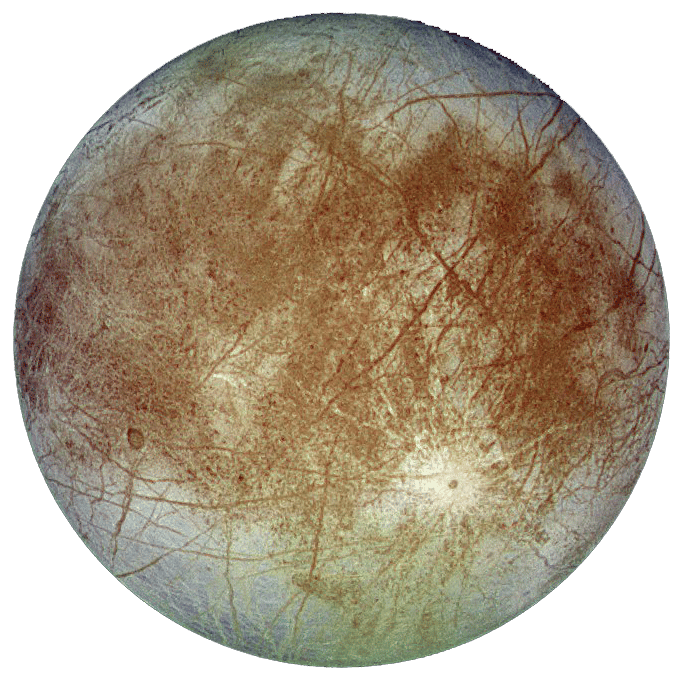

| Destination |
Experience |
Facts |
Moon |
Experience the breathtaking beauty of the Moon. Walk on its surface and witness Earthrise from a unique vantage point. |
- Distance from Earth: 238,900 mi
- Moon travels around the Earth in an oval-shaped orbit
- It takes 27.3 days for the Moon to travel all the way around the Earth
- The Moon controls the tides
|
Mars |
Embark on a journey to the red planet. Explore its rugged terrain and learn about potential colonization efforts. |
- Distance from Earth: 155.75 million mi
- Mars is sometimes called the Red Planet
- Mars has 4 seasons like Earth
- Mars has 2 moons called Deimos and Phobos and is named after the Roman god of war
|
| Europa - Jupitar's Moon |
Discover the icy moon of Jupiter with its subsurface ocean. Experience the thrill of exploring uncharted territories. |
- Distance from Earth: 390.4 million mi
- Europa's surface is made of ice, so it reflects 5.5 times the sunlight than Earth's Moon does
- Scientists believe that there lies an ocean beneath the surface of Europa, which houses life
- Because Europa's bombarded by the radiation from Jupiter, it glows in the dark.
|